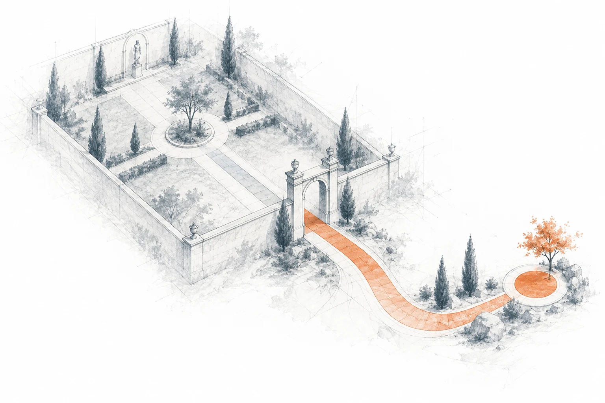
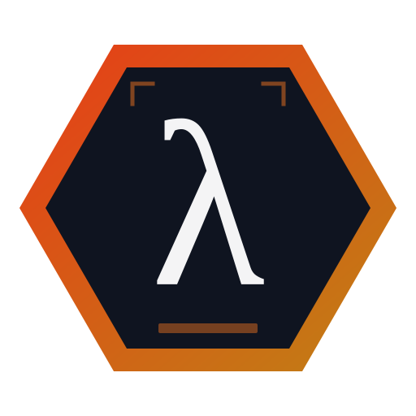

Keep it human
Neither proven nor worth the effort. Say so, and stop debating it.
e.g.Preparing a refund for approval: six a week, and nothing yet to check it against.
A person decides

Every team has a budget of decisions it can make in a week. AI can take some of them. The question is never "can we use AI", it is which decisions do we hand over, and in what order.
Treat AI like a new employee: it gets responsibility as it earns trust, and some things it is never trusted with. We work at the level of the decision, not the task: "send the customer an update" is three decisions (what may be said, to whom, and whether it goes without a person reading it), and they land in different places.
That is the whole method in one picture. Top right is the goal. Most of the work is moving decisions from top left to top right by earning trust, and being honest about the bottom left, where the right answer is "a person keeps this".
"Trusted" on the last slide means a rung on this ladder, reached on evidence. Shadow is the cheapest evidence there is: no risk, nothing acts on it, and it is the step everyone skips. A team that says "we don't know whether AI can do this" is describing an experiment it has not run.
Proposing is often the destination, not a stopping point: for judgement work, AI drafts, a person decides is where the productivity gain actually is.
Counted from your own people's week, not guessed. Then your team weighs what matters: hours are the floor of the value, not the whole of it.
Climbing the ladder is work, and most of it is not AI work: writing down a standard, keeping a record. That is why it needs a budget. Almost nothing is waiting on a better model; most of it is waiting on somebody writing down what correct means.
The worked example is Harbour & Pine, an invented homewares shop from our public sample pack. 16 decisions, 9 with a volume, and 8 hours a week (a working day) on the ones AI could take unattended. A further 9.5 hours a week goes on decisions AI would draft for a person; we don't add that, because the share it frees is unknown.
The same picture as slide 2, with real output on it, the goal in the same corner: close to trusted and high value is where you start. Sending a status-only reply without a person reading it takes 4 hours a week and is two rungs away. Drafting replies for a person is worth 3 hours but caps at proposing, because a person keeps the final say.
The decisions held at rung 0 for good are not failures; they are the list that makes everything else agreeable.

Read and mapped in AILANG Every decision found, traced to the line it came from, and the gaps listedAn open question is a finding: it gets an owner and a date, not a guess.
We do the preparation, so workshop time goes on the decisions only your people can settle. How many workshops depends on how much there is to settle. The pipeline is built in AILANG, our own language for AI-written code: the consistency rules on every specification are proved by a solver, so they hold for every input, not just the ones someone thought to test.
The output is useful without us. Build it yourselves, or hand it to another supplier.
The first thing to build is usually a standard and a record, then the automation. Each phase says what it releases: which decision moves up a rung once it lands. A standard written in two weeks makes a whole class of decisions checkable.
Generated from the same source as the specification: the full roadmap, envelope and readiness view are in the sample pack on the website.